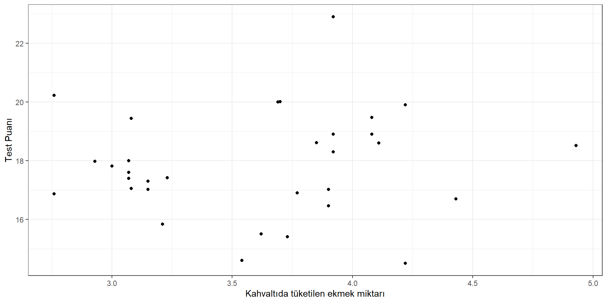
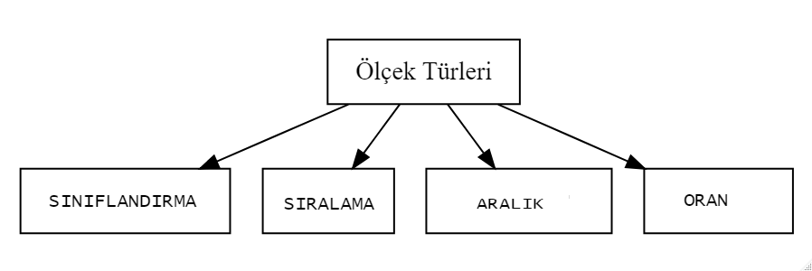
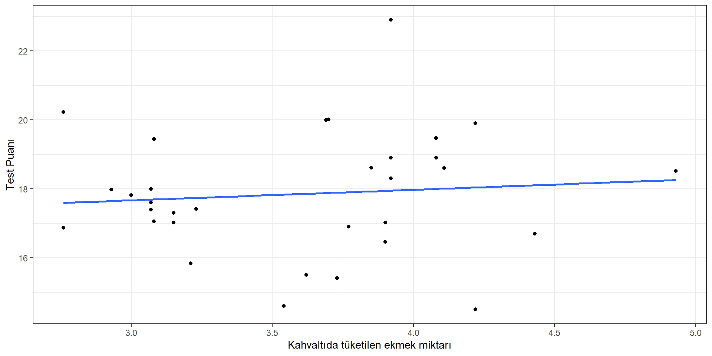
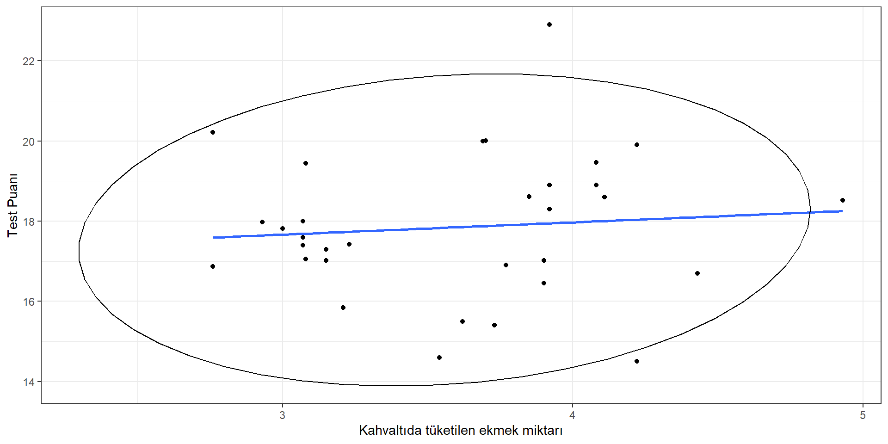
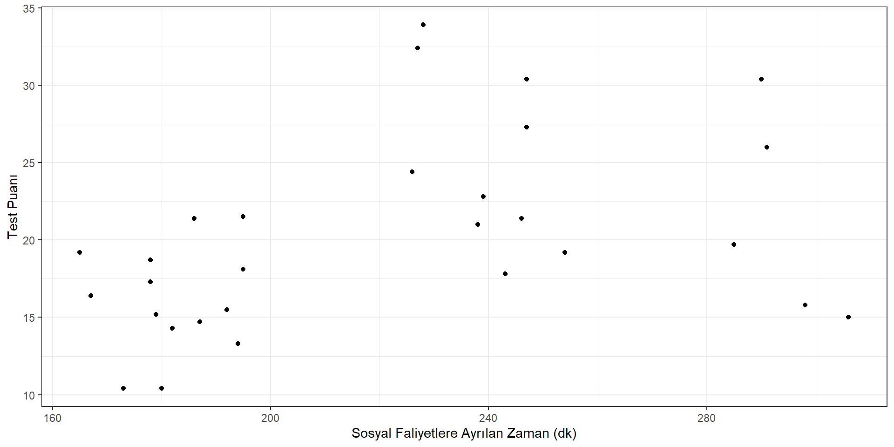
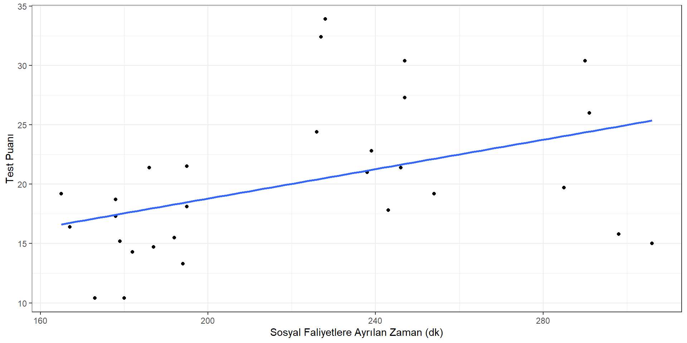
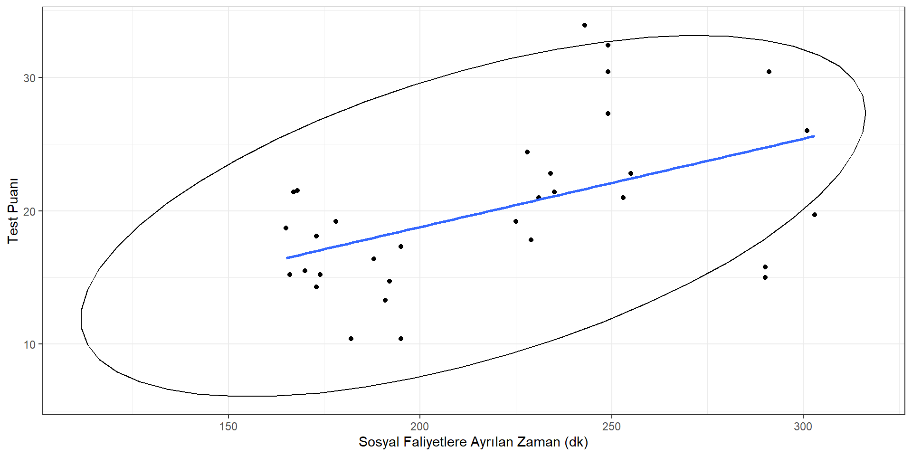
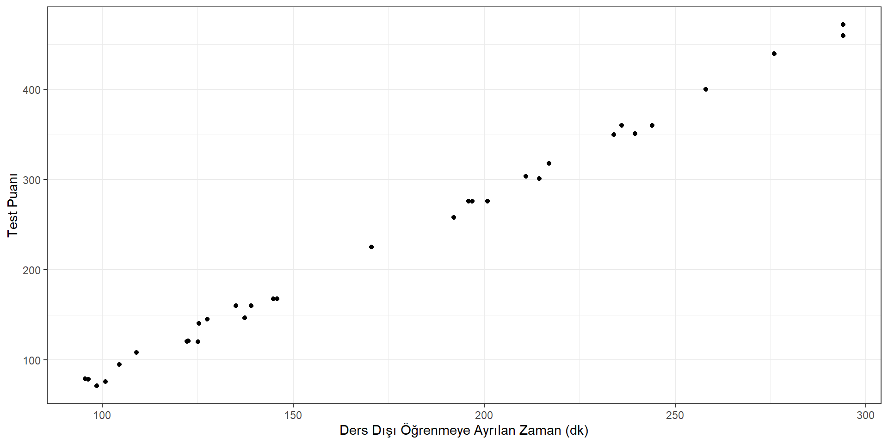
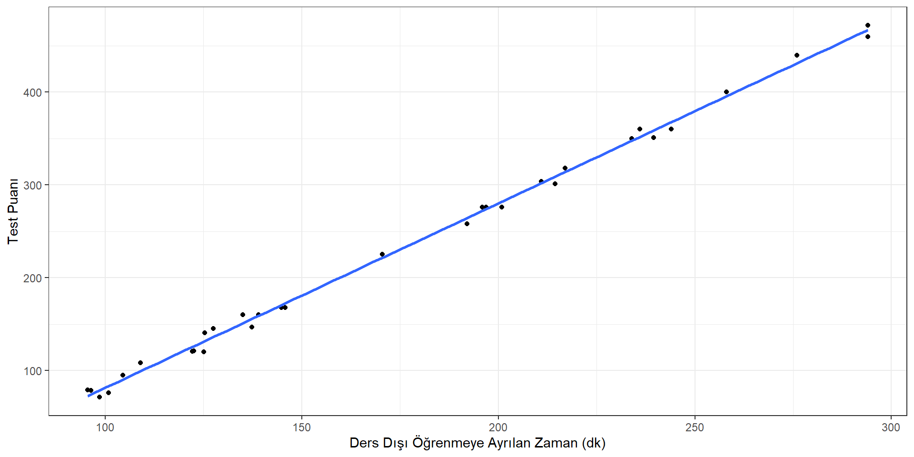
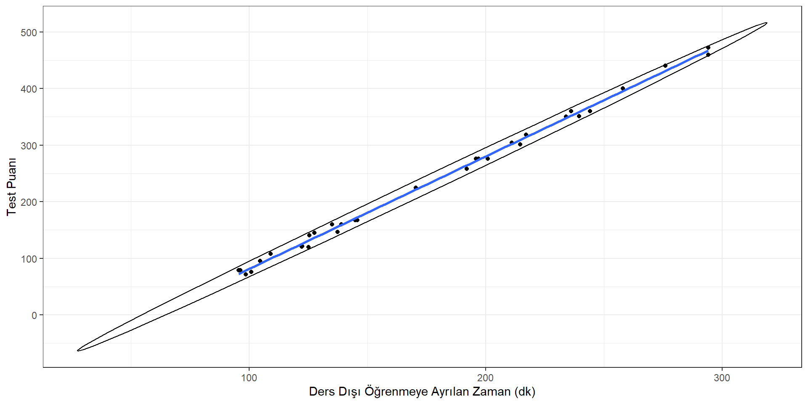

💪 EGİTİMDE ARAŞTIRMA YÖNTEMLERİ
📊 Ölçemnin Temel Kavramları
İçerik 🧭
- Ölçme ve Ölçme Türleri Nedir?
- Ölçüm Kuralı Nedir?
- Ölçüm Nedir?
- Ölçek Nedir?
- Ölçek Türleri Nelerdir?
- Ölçmede Hata
- Ölçme Aracının Sahip Olması Gereken Özellikler
- Değişken
- Korelasyon
- Güvenirlik ve Geçerlik
🧪 Ölçme ve Ölçme Türleri Nedir?
- Ölçme, birey ya da nesnelerin niteliklerinin uygun araçlar kullanılarak gözlenip gözlem sonuçlarının sembollerle ifade edilmesidir (Büyüköztürk vd., 2020).
🌍 Ölçme Nedir?
Ölçme; insanın varlığı ile var olan ve var olmaya devam edecek olan bir kavramdır.
Çünkü insanoğlunun her nasıl var olduğu kabul edilirse edilsin, var olduğu ilk andan itibaren çevresinde olan varlıkları gözlemlemek, algılamak ve buna göre tepkide bulunmak gibi bir mecburiyeti olmuştur.
Bu gözlemleme ve algılama işi de başlı başına bir ölçmedir. Bu sebeple ölçme kavramı insanın varlığı ile başlamakta ve hâlâ bu kavram insanla birlikte devam etmektedir.
Ölçme Nedir?
Ölçmek bilmektir,
ölçülebileni ölçün,
ölçülemeyeni ölçülebilir hale getirin.
Galileo Galilei
Ölçme Nedir?
Ölçmek - measure
me kökünden helen birçok kelime bulunmakta
moon (ay) - eskiden zamanı ölçmek için ayın pozisyonu kullanılırmış.
month (ay) - moon kelimesinden gelir.
Monday (pazartesi) - ay günü
Semester - six ve month
menopause (menapoz) - month (ay) ve pause (durmak)
meter, geometry, thermometer, dimension
immense (sonu olmayan büyük)
Ölçme Nedir?
Ölçmenin farklı bilim dallarında farklı tanımlarını görmek mümkündür.
Fakat, aynı zamanda aynı bilim dalı içinde de farklı ölçme tanımları görülebilmektedir.
Ölçmenin mantığı bir ölçme aracı oluşturmak için gerekli olan şartlarla ilgilidir.
Ölçme, burada kullanıldığı şekli ile, karşılaştırma standardının geliştirildiği sürece atfedilir.
Ölçme Nedir?
Geniş anlamı ile ölçme, herhangi bir niteliğin gözlenmesi ve gözlem sonucunun sayılarla ya da başka sembollerle ifade edilmesidir.
Eğitim ve psikoloji açısından ele alındığında ölçme bireyler hakkında bilgi toplama sürecidir.
Ölçme Nedir?
- Ölçme tanım kümesi ile değer kümesi arasında bir fonksiyon olarak tanımlanabilir.
- Ölçmenin konusu, objelerin kendileri değil onların dikkate alınan özellikleridir.
Niçin Ölçme Yapıyoruz?
Ölçme değişimleri farklılıkları ortaya koymak, belirlemek amacıyla yapılır.
Her nesne birçok farklı özelliğe sahiptir.
Bu bakımdan denilebilir ki ölçme bu farklar üzerine temellenmiştir.
Eğer özellikler arasında fark olmasaydı o zaman ölçmeye gerek duyulmazdı.
Ölçme Türleri
Özellikler arası farkları ortaya koymak ve bunları anlamlı hale getirerek bir takım sembollerle ifade etmeye ihtiyaç vardır.
Ancak bazı özellikler doğrudan gözlenebildiği halde bazı özellikler doğrudan gözlenmeye elverişli değildir. Bunların dolaylı olarak gözlenip ölçülmesi gerekir.
Ölçme Türleri

Ölçme Türleri
Eğitimde bilişsel-duyuşsal alan davranışlarının ölçülmesi dolaylı ölçmedir.
Doğrudan ölçmenin geçerliği ve güvenirliği yüksektir.
🔢 Ölçek Türleri
Ölçek, birinci anlamı sayı ve sembollerin anlamlarını ya da sayı ve sembollerin verilmesinde uyulması gereken kurallar
İkinci anlamı ise birimle bölmelenmiş ölçme aracını belirtmektedir (Turgut ve Baykul, 2019).
Ölçek Türleri
Ölçek Türleri
| İsim | Karar |
|---|---|
| Ekin | Başarılı |
| Arda | Başarılı |
| Demir | Başarılı |
| Ela | Başarılı |
| . | . |
| . | . |
| . | . |
| Ece | Başarısız |
| Emel | Başarısız |
Ölçek Türleri
| İsim | Başarı Sırası | Karar |
|---|---|---|
| Ekin | 1. | Başarılı |
| Arda | 2. | Başarılı |
| Demir | 3. | Başarılı |
| Ela | 4. | Başarılı |
| . | . | . |
| . | . | . |
| . | . | . |
| Ece | 23. | Başarısız |
| Emel | 24. | Başarısız |
Ölçek Türleri
| İsim | Not | Başarı Sırası | Karar |
|---|---|---|---|
| Ekin | 10 | 1. | Başarılı |
| Arda | 9 | 2. | Başarılı |
| Demir | 8 | 3. | Başarılı |
| Ela | 7 | 4. | Başarılı |
| . | . | . | . |
| . | . | . | . |
| . | . | . | . |
| Ece | 3 | 23. | Başarısız |
| Emel | 2 | 24. | Başarısız |
Ölçek Türleri
| İsim | Sınavı tamamlama dakikası | Not | Başarı Sırası | Karar |
|---|---|---|---|---|
| Ekin | 10 | 10 | 1. | Başarılı |
| Arda | 9 | 9 | 2. | Başarılı |
| Demir | 8 | 8 | 3. | Başarılı |
| Ela | 7 | 7 | 4. | Başarılı |
| . | . | . | . | . |
| . | . | . | . | . |
| . | . | . | . | . |
| Ece | 3 | 3 | 23. | Başarısız |
| Emel | 2 | 2 | 24. | Başarısız |
Ölçek Türleri
| Zeynep | Aras | Elif | Deniz | |
|---|---|---|---|---|
| Oranlı | 180 cm | 160 cm | 140 cm | 90 cm |
| Aralıklı | 85 | 65 | 45 | 15 |
| Sıralama | 1. | 2. | 3. | 4. |
| Sınıflama | Uzun | Uzun | Kısa | Kısa |
Ölçek Türleri
| Ölçek | Başlangıç Noktası | Birimi | Sıra | Fark | Oran |
|---|---|---|---|---|---|
| Sınıflama | Yok | Yok | - | - | - |
| Sıralama | Değişken | Değişken | Var | - | - |
| Aralık | Keyfi | Keyfi | Var | Var | - |
| Oranlı | Mutlak | Mutlak | Var | Var | Var |
Ölçmede Hata
- Güvenirlik ve geçerlik kavramlarının temel mantığı ölçme sonuçları ve bu sonuçlar kullanılarak yapılan değerlendirmelerin ne kadar az hatalı olduğunun belirlenmesi üzerinde kurulmuştur.
Ölçmede Hata
Ölçülen özelliğin gerçek değeri ile gözlenen değeri arasındaki fark hatadır.
Bir test veya ölçekten elde edilen puanlar ne zaman hatalıdır?
- Hemen her zaman!
Gerek fiziksel bilimlerde gerekse sosyal bilimlerde ölçüm sonuçlarına mutlaka bir miktar hata karışır ve bu hatanın miktarı kesin olarak bilinemez.
Hatayı ortadan kaldırmak mümkün olmasa da hata kaynaklarını belirleyip en aza indirmek mümkün olabilir.
Ölçmede Hata
Ölçmeye karışan çeşitli hatalar nedeniyle gözlenen bir özelliğin gerçek değeri doğrudan elde edilemez, ölçme sonucu gözlenen puanlar yardımıyla kestirilmeye çalışılır.
Hatanın miktarı arttıkça elde edilen puan bireyin gerçek puanından (gerçek başarı, yetenek veya bilgi düzeyi) uzaklaşır.
Ölçmede Hata
Elde edilen puanın yönü iki taraflı olabilir yani olması gerekenden fazla veya az olabilir.
Hataya sebep olan etkenlerin farkında olmak, ölçme işlemine karışan hataları azaltmaya yardımcı olur.
Ölçümlerdeki hatanın mümkün olduğunca azaltılması, ölçülen özelliğin miktarı hakkında doğru bilgi edinebilmek ve bunun sonucunda doğru kararlar verebilmek açısından önemlidir.
Ölçmede Hata
Ölçmede hataların kestirilebilmesi için ölçmelerin tekrarı gereklidir.
Her öğrenci için tek bir ölçüm sonucu olsaydı her ölçmenin sonucu kendisine eşit olacak ve ortalamadan sapmalar söz konusu olmayacaktı.
Bu nedenle eğitimde hata miktarının ve güvenirliğin kestirilebilmesi için tekrarlı ölçümlere ya da ölçümlerin tekrarı sayılabilecek yöntemlere ihtiyaç vardır.
Ölçmede Hata
Ölçme aracından kaynaklanan hatalar
Ölçmeyi yapan bireyden kaynaklanan hatalar
Ölçülen bireyden kaynaklanan hatalar
Ölçmenin yapıldığı ortamından kaynaklanan hatalar
Hata Türleri
Ölçmede Hata
Sabit ve sistematik hatalarda ölçme sonuçlarına karışan hatanın miktarı, yönü ve kaynağı bellidir. Bu sebeple bu tür hataların ölçme sonuçlarına karışmasını engellemek ya da düzeltmek nispeten daha kolaydır.
Ölçme sonuçlarına bazen pozitif, bazen de negatif önde karışabilirler. Bu nedenle tesadüfi hatalar kontrol edilemez.
Güvenirlik 🔒
Ölçme sonuçlarının tesadüfi hatalardan arınıklığının bir ölçüsüdür (Turgut, 1990; akt: Büyüköztürk vd., 2020).
Duyarlılık
Tutarlılık
Kararlılık
Korelasyon: Zayıf ilişki 🔍


Geçerlik
Kahvaltıda tüketilen ekmek miktarı ve test puanı arasındaki korelasyon 0.091
Korelasyon 🔍



Geçerlik
Sosyal faliyetlere ayrılan zaman ve test puanı arasındaki korelasyon 0.437
Korelasyon 🔍



Geçerlik
Ders dışı öğrenmeye ayrılan zaman ve test puanı arasındaki korelasyon 0.999
Güvenirlik
Test-Tekrar Test Yöntemi
Eşdeğer (Paralel, Alternatif) Formlar Yöntemi,
İç tutarlılık Yöntemleri
- Testi Yarılama/Eşdeğer Yarılar
- KR-20, KR-21
- Cronbach Alpha
Değerlendirmeciler Arası Tutarlılık
- Yüzde Uyumu
- Sınıf içi Korelasyon
- Kappa Yöntemi
(Gliner, Morgan ve Leech, 2009/2015; akt: Ocak, 2019)
Test-Tekrar Test Yöntemi
İki uygulamadan elde edilen puanlar arasındaki korelasyon,
1’e yaklaşırsa puanlar birbirine yaklaşır, 0’a yaklaşırsa puanlar birbirinden uzaklaşır,
Kararlılık katsayısı,
Yüksek korelasyon zamana bağlı olarak değişim olmadığını gösterir,
İki uygulama arasındaki zaman ….
Eşdeğer (Paralel, Alternatif) Formlar Yöntemi
Aynı özelliği ölçmeyi amaçlayan iki test,
İki test uygulaması kısa aralıklarla yapılmalı,
Eşdeğerlik katsayısı,
Grup ikiye ayrılarak uygulama yapılabilir,
İç tutarlılık Yöntemleri /Testi Yarılama(Eşdeğer Yarılar)
- Test iki eş paçaya ayrılarak parçalar arası korelasyon yöntemi
- Pearson korelasyonu, Spearman-Brown veya Rulon
- İki ayırlama işlemi; hesaplanır,
- Tek-çift numalara,
- Tesadüfi seçim,
- Hedef davranışlar,
- Madde güçlükleri
İç tutarlılık Yöntemleri /KR-20,KR-21; Cronbach alpha
KR-20, KR-21: 0 – 1 puanlamanın yapıldığı ölçme araçları için hesaplanır.
Cronbach alpha: Derecelendirme ölçeği (ör: 1-5) kullanılan ölçme araçları için hesaplanır.
Değerlendirmeciler Arası Tutarlılık
Bireylerin ölçülen özelliğe ne derecede sahip olduğuna ilişkin iki ya da daha fazla bağımsız gözlemcinin/puanlayıcının verdiği puanların güvenirliğini incelemede kullanılır.
Puanlar arası tutarlılık varsa, verilecek puanlar, iki değerlendirmecinin puanlarının ortalaması alınarak verilebilir.
Güvenirliği Etkileyen Faktörler
Ölçme aracına ilişkin faktörler:
Testin uzunluğu
Uygulama yönergesi ve maddelerin ifadesi
Maddelerin homojenliği
Puanlamadaki nesnellik
Testi alan birey ve gruba bağlı faktörler
Uygulama koşulları ve zaman
Geçerlik
Bir ölçme aracının ölçülmek istenen özelliği ölçüp ölçmediği hakkında karar vermek için birden fazla kanıta ihtiyaç vardır.
Bu yönüyle geçerlik, ölçme aracını kullanan kişinin ölçme sonuçlarından çıkarılacak yorumları ve ölçme sonuçlarının kullanımını desteklemek için topladığı kanıtlar olarak tanımlanabilir.
Bu açıdan bakıldığında, geçerlik tek bir katsayıyla ifade edilmek yerine testin geliştirilme ve kullanılış amacına hizmet eden kanıtların toplanmasıyla yorumlanabilir
Geçerlik 🎯
- Geçerli bir ölçme aracı öğrencilere ne bildiklerini gösterme şansı veren ölçme aracıdır.
Hangi konular teste/sınava dahil olmalı?
Hangi tip maddeler kullanılmalı?
Sınavda kac madde yer almalı?
Hazırlanan sınavdan elde edilecek puanlar benzer amaçla hazırlanmış sınavlarla uyumlu?
Hazırlanan sınavdan elde edilecek puan gelecekteki başarıyı kestirmede ne kadar başarılı?
Geçerlik
Ölçme aracıyla ölçülmek istenen özelliğin diğer özelliklere karıştırılmadan ne derece doğru ölçtüğü ile ilgilidir.
Kapsam Geçerliği
Ölçüte Dayalı Geçerlik
Eşzaman geçerliği
Yordama geçerliği
Yapı Geçerliği
Kapsam Geçerliği
Ölçülmesi hedeflenen davranışlar evreninin, ölçme aracında yer alan sorularla (davranışlar örneklemi) iyi bir şekilde temsil edilmesi,
Uzman görüşüne başvurmak,
Belirtke tablosu
Ölçüte Dayalı Geçerlik
Geçerliği ve güvenilirliği daha önceden belirlenmiş bir ölçüt
Eşzaman geçerliği: Aynı ya da yakın zamanda ölçüt alınan ölçme aracının uygulanması
Yordama geçerliği: Ölçüt alınan ölçme sonuçları ileri bir zaman diliminde elde edilir
YAPI GEÇERLİĞİ
Ölçme aracıyla ölçülmek istenilen yapının ne derecede ölçülebildiği ile ilgilenilir,
İlgili, tutum, güdü vb. psikolojik yapıların ölçülmesi,
Kavramların Özeti 🧠
Ölçme
Niteliklerin gözlenmesi ve sembollerle ifade edilmesi
Ölçek
Ölçme kuralları ya da araçları
Güvenirlik
Sonuçların tutarlılığı, tesadüfi hatalardan arınıklık
Geçerlik
Ölçme aracının ölçmek istediğini ölçme derecesi
Yararlanılan Kaynaklar
- Aybek, E. C. (2019). Verilerin çevrimiçi toplanması, saklanması ve etik. K. Yılmaz ve R. S. Arık (Edt.) Bilim ve araştırma etiği içinde (2-11). Ankara: Pegema Yayıncılık.
- Büyüköztürk, Ş., Çakmak E. K., Akgün, Ö. E., Karadeniz, Ş., Demirel, F. (2020). Eğitimde bilimsel araştırma yöntemleri (28. Baskı), Ankara: Pegema Yayıncılık.
- Frankel, J. R.; Wallen, N. E. & Hyun, H. H. (2012). How to design and evaluate research in education (8th Edition). New York: McGraw Hill International.
- Ocak, G. (2019). Bilimsel araştırmalarda kullanılan veri toplama yolları. G. Ocak (Edt.), Eğitimde bilimsel araştırma yöntemleri içinde (2-61). Ankara: Pegema Yayıncılık.
Dr.Kübra Atalay Kabasakal